Mexico

Dr. Christopher N. Lawrence
Middle Georgia State University
POLS 2301: Comparative Politics
Geography

Mexico (México; officially, los Estados Unidos Mexicanos or the United Mexican States) is the most populous Spanish-speaking country in the world, located to the south of the United States and north of the Central American countries of Belize and Guatemala.
Pre-Colombian History
Like the other indigenous peoples of the Americas (including the native Americans), the original settlers of Mexico are descendants of hunter-gatherers who came from Asia approximately 15,000 years ago.
Several civilizations thrived in Mexico before the arrival of Europeans in 1519. Early civilizations such as the Olmec, Zapotec, Teotihuacán, and Toltec only left behind myths and archaeological evidence, but no writing.
One of the legacies of these civilizations was the domestication of important crops: maize (corn) and, in South America, the potato.
The Maya and the Aztecs
The most advanced civilization were the Maya, who built large cities in southern Mexico, Guatemala, and Belize. They had a deep understanding of mathematics and astronomy, and left behind writing; however, Mayan civilization was in decline for centuries before the Spanish arrived.
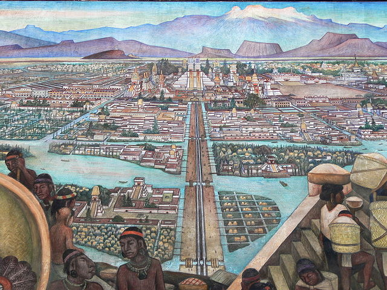In central Mexico, the Toltec civilization was displaced around 1300 A.D. by the Aztecs (or Mexica), who built their capital Tenochtitlán on an island in the middle of a great lake in a high valley known today as the Valley of Mexico.
Cortés and the Aztecs
The first Europeans to explore Mexico were led by the conquistador Hernán Cortés, who brought hundreds of Spanish soldiers in ships from Cuba in 1519. He was joined by thousands of natives who were enemies of the Aztecs.
Although initially unsuccessful in subjugating the Aztecs, Cortés and his allies conquered the Aztecs in 1521 and most of the Maya soon thereafter. The center of Tenochtitlán, including the main temple complex, was leveled and its stone was used to build a new city on its ruins known as México.
The Colonial Era
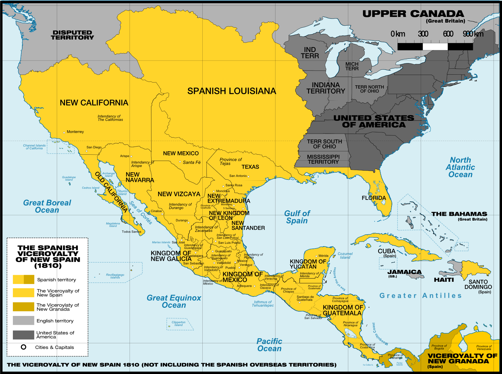Under Spanish rule, New Spain had a strict social hierarchy:
- Peninsulares (Spanish-born).
- Criollos (their "pure" descendants).
- Mestizos (mixed-race).
The native peoples were either made serfs or fled to areas where the Spanish authorities had limited or no control.
Over the next three centuries, New Spain spread as far north as modern Canada, and as far south as Panama.
Independence from Spain
Calls for independence began after the American and French revolutions. Some supporters of independence, such as Miguel Hidalgo and José Maria Morelos, who were executed by the Spanish authorities, wanted a revolutionary change in Mexican society.
However, it was conservative elements in Mexican society that eventually were able to achieve independence; they feared that the adoption of 1812 Spanish Constitution (the Constitution of Cadiz) would lead to a loss of the privileged position of the criollos in Mexico.
The First Empire
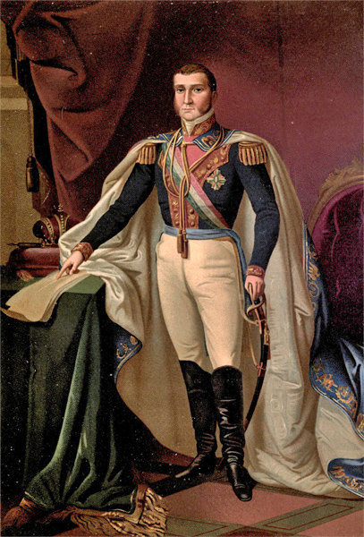Although the leaders of the revolution, including Agustín de Iturbide, wanted a Mexican Empire under monarchical rule—and Iturbide himself briefly ruled as Agustín I—the empire was overthrown and a federal republic was established in its place.
Life After Independence
With the collapse of the empire, most of Central America went its own way, leaving Mexico to govern the areas of modern Mexico and the American Southwest. A republican constitution was adopted in 1824, modeled on the American constitution.
However, rather than stable and peaceful transfers of power, Mexico experienced lurches between democracy and dictatorship throughout the 19th century as liberal federalists and conservative centralizers jockeyed for power.
Santa Anna
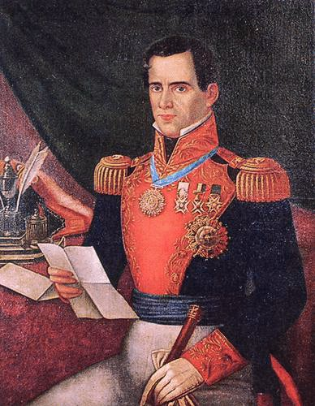The strongman rule of Antonio López de Santa Anna was disastrous for Mexico. Santa Anna attempted to centralize power, provoking revolts against his government in several states.
The most successful revolt was by the American and Mexican settlers in the frontier area of Texas, who demanded their own state government, a return to federalism, and legal recognition of slavery.
Texas Independence
Santa Anna's superior force suffered a humiliating defeat at the hands of the Texans at the Battle of San Jacinto. He was forced to recognize Texas' independence—although he reversed himself when the Texans freed him to return to Mexico City.
In 1845, the struggling Republic of Texas was bailed out by the American government and was annexed by the United States. American president James K. Polk launched a series of provocative expeditions by American soldiers into the areas claimed by the Republic of Texas along the Río Grande.
Territorial Losses
Border skirmishes gave a pretext for the 1846–48 Mexican-American War, which ultimately led to the Mexicans being completely defeated and American soldiers marching into Mexico City.
In the Treaty of Guadalupe Hidalgo (1848), Mexico ceded 529,000 square miles of territory in exchange for $15 million. In 1853, Mexico agreed to the Gadsden Purchase of an additional 30,000 square miles for $10 million; this land would allow for a southern transcontinental railroad to be constructed on U.S. territory.
Juárez and the Reform War
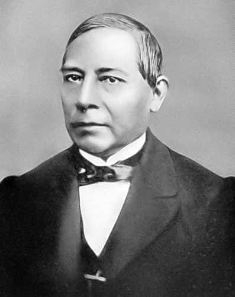After the Mexican-American War, Santa Anna briefly returned to power as dictator from 1853–55. He was deposed and a new constitution was adopted; however, this new constitution led to a civil war known as the Reform War from 1857–60.
During the Reform War, the president and leader of the liberal faction was Benito Juárez; he supported greater separation of church and state in Mexico, as the Catholic Church was a very conservative force in Mexican politics.
The Second Empire
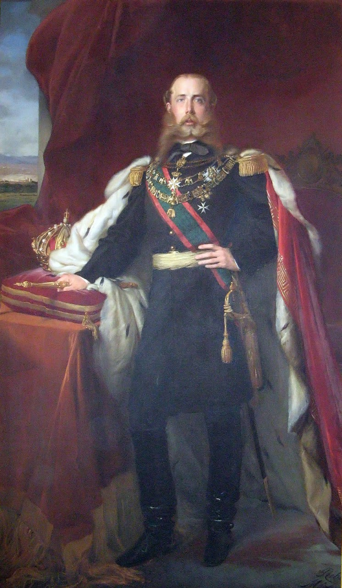An invasion backed by Napoléon III of France forced Juárez to flee the capital in 1863, while claiming still to be the ruler of Mexico.
The French installed an Austrian prince, Maximilian, as emperor. He was never able to fully consolidate his power and was executed in 1867 after France withdrew its supporting troops; Juárez was restored to power as president.
The Porfiriato
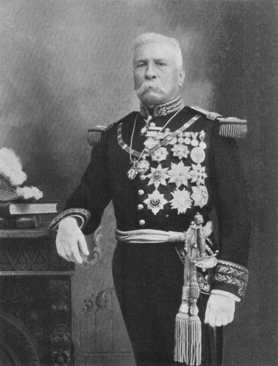When Juárez died in office in 1872, other politicians jockeyed for position. The former head of the army, Porfirio Díaz, emerged victorious in this struggle. Although he originally took over with the slogan “no reelection,” he would effectively rule Mexico directly or indirectly from 1876 through 1911.
During this period, known as the Porfioriato, Mexico had greater political stability and economic growth, but the peasantry in particular was left behind. This sowed the seeds for revolutionary upheaval.
The Fall of Díaz
After promising to retire, Díaz attempted to run again for president in 1910. A wealthy academic, Francisco Madero, decided to run against Díaz. When the official results were announced, they were clearly fraudulent and Madero called for a revolt.
The army was unable to put down the rebellion, and Díaz resigned and fled into exile. Madero was then installed as president in 1911.
The Revolution Begins
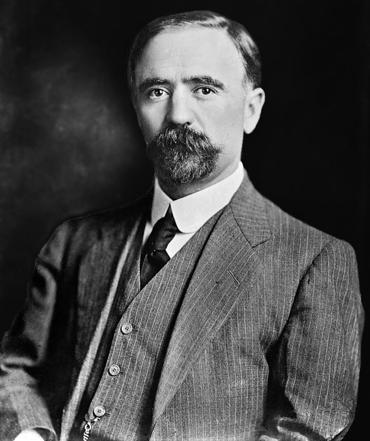Madero, however, was soon beset with opposition on both sides: more radical revolutionaries wanted larger reforms in Mexican society, while the army and Díaz's allies thought he was too radical.
Army general Victoriano Huerta, with the support of the U.S. and Spanish ambassadors, ousted Madero in a coup d'état in 1913. The coup against Madero led to an all-out civil war among the various factions within Mexico.
The Revolutionary Era
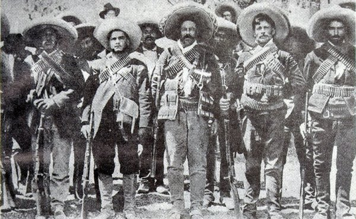Huerta's rule was brief, and was followed by a struggle between radical reformers and proponents of a return to orderly government.
The United States was drawn directly into the conflict as a result of border raids by revolutionary Pancho Villa and others.
In 1917, the military and a number of political bosses worked together to try to end the fighting by writing a new constitution that would placate both sides.
One-Party Rule
Under the new constitution, revolutionary goals would be accomplished by conservative means—thus, the Mexican Revolution became “institutionalized.”
They established a single-party state with an “elected” dictatorship under a single party that eventually became known as the Institutional Revolutionary Party (PRI).
Although other political parties were not formally banned, and non-PRI candidates held seats in Congress and state legislatures, a combination of campaign regulations, bribery, vote rigging, and fraudulent vote counting ensured that the PRI won almost all elections of consequence.
Socialism and Corporatism
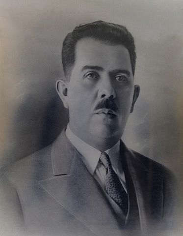Lázaro Cárdenas oriented Mexico toward socialism under his presidency. He nationalized the oil industry, creating Pemex, and several others as well. He also promoted land reform, breaking up many of the large agricultural estates (haciendas) and creating cooperatives in their place.
Cárdenas also promoted a corporatist structure in Mexico, where interest groups would participate directly in government through the ruling party. This made it more a coalition of interest groups representing various sectors of society than a traditional party.
The 1970s and 1980s
Like many other countries, including the social democratic countries in Europe, Mexico has a lengthy postwar boom. However, in the 1970s, despite being an oil exporter, Mexico spent a “lost decade” mired in inflation and economic stagnation that destroyed the value of the peso.
In the 1980s, the PRI began to liberalize the economy and move away from state ownership of industry.
The 1988 presidential election was a turning point for Mexico. Although the PRI's Carlos Salinas ultimately “won” the election, almost all impartial observers believed it was only due to fraud on a massive scale.
The Modern Era
Salinas negotiated Mexico's accession to the North American Free Trade Agreement (NAFTA) with Canada and the United States, and introduced modest political reforms.
The most consequential of Salinas' reforms, ironically, was replacing the corrupt and PRI-dominated Federal Electoral Commission with a more independent agency.
His successor, Ernesto Zedillo (1994–2000), despite a serious economic crisis at the beginning of his term, continued the trend toward privatization of state-owned businesses.
Rise of the PAN
Electoral reforms since 1988 made elections fairer and more competitive, culminating in election of Vicente Fox of the center-right National Action Party (PAN) in 2000.
In 2006, PAN candidate Felipe Calderón won the presidency narrowly over left-wing candidate Andrés Manuel López Obrador (PRD) in a heavily disputed election.
The Presidency
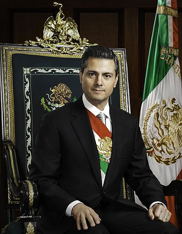Mexican presidents are elected by nationwide popular vote with no runoff requirement; in recent elections, this has meant that several presidents have taken office with only minority support.
The president serves a six-year term (the sexenio) and can only serve one term; presidents are “lame ducks” the day they are elected.
The current president is Enrique Peña Nieto of the PRI, who received 39.2% of the vote, since December 1, 2012.
Presidential Cabinets
President chooses a cabinet that includes secretaries of state responsible for various government activities. Only the attorney general has to be approved by the Mexican Senate.
The most powerful cabinet member is the interior secretary (secretario de gobernación). This post oversees national security issues and is generally seen as the “stepping stone” to the presidency.
No vice president; instead, the interior secretary serves as the presidente provisional in the event of the president's death, incapacity, or resignation, until Congress appoints a successor.
The Chamber of Deputies
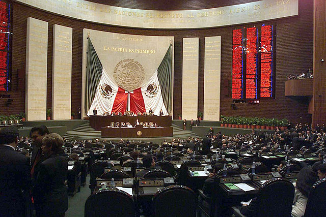The national legislature is known as the Congress of the Union.
The lower house is known as the Chamber of Deputies (Cámara de Diputados).
500 members are elected to three-year terms. Beginning in 2018, deputies will be allowed to serve up to four terms.
The most recent elections were held in July 2015.
Electoral System

300 deputies are elected from single-member districts by plurality vote (first-past-the-post). The 200 remaining deputies are chosen in five 40-seat multi-state constituencies by closed list proportional representation.
Each state (including the federal district) has at least two districts, regardless of population.
This parallel voting system is an example of semiproportional representation—unlike the German MMP system, it does not produce fully proportional outcomes.
The Chamber of Senators
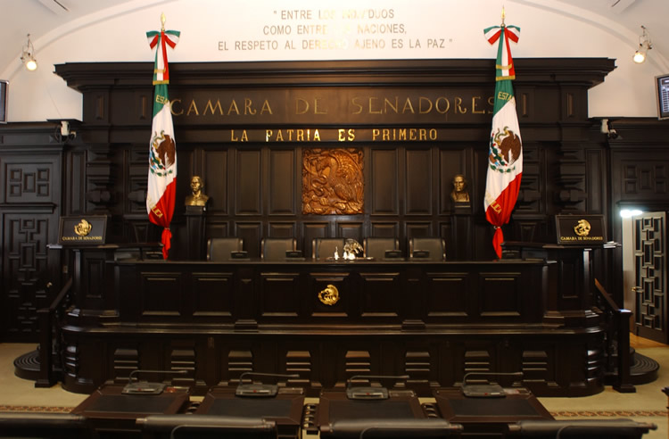The upper house is known as the Chamber of Senators (Cámara de Senadores).
Senators serve six-year terms; all 128 members are elected at the same time as a presidential election takes place.
Starting in 2018, they will be able to serve two terms.
Senate Elections
Each state (and the federal district) has three seats in the Senate:
- Two seats go to the party that gets the most votes (candidates run on a joint ticket).
- One seat goes to the party that gets the second-most votes.
32 additional seats are elected nationwide based on their party's share of the total vote. Like the Chamber of Deputies, this makes the Mexican Senate semiproportional.
States of Mexico

As a federal republic, Mexico has 31 constituent states (estados). There is also a separate federal district (distrito federal) for the capital, Mexico City.
Under the unified rule of the PRI, states had little real autonomy. As the PRI's domination has broken down, states led by opposition parties have been able to assert greater independence from the federal government.
Major Political Parties
The Institutional Revolutionary Party (PRI): the former ruling party; generally considered to be centrist but with elements of both the left and right.
The National Action Party (PAN): the party that controlled the presidency from 2000–12. On the political center-right; similar to Germany's Christian Democrats.
The Party of the Democratic Revolution (PRD): generally left-of-center and social democratic in orientation. Founded by Cuauhtémoc Cárdenas, son of Lázaro and “loser” of the 1988 presidential election.
Minor Parties
There are also a number of minor parties; both the Citizens' Movement (Movimiento Ciudadano) and the Green Party (PVEM) control one state governor's seat each.
Other parties include the Labor Party (PT, Partido del Trabajo) and the New Alliance Party (PANAL).
Minor parties often join a coalition with one of the PRI, PAN, or PRD, agreeing to support a major party's presidential candidate and work together to elect members of Congress.
This does not mean, however, that the “coalition” will work together after the election; it's more like a vote-sharing agreement.
The Challenge of Development
Mexico is still a developing country, with widespread rural poverty. Although the PRI promised to spread the country's oil wealth to the whole nation, that didn't really happen.
Although privatization since the 1980s has led to greater economic growth, many of the benefits have fallen into the hands of politically-connected businessmen rather than the public at large. Carlos Slim became the richest man in the world, in part due to the privatization of Telmex in 1990.
The lack of economic opportunity in Mexico has led to many younger Mexicans better seeking economic opportunities in the United States, often working illegally to help support family back home.
Indigenous Peoples
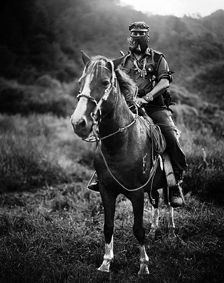Like in many Latin American countries, the criollo and mestizo populations have historically held the dominant positions in Mexican society.
Rural, predominantly native communities have been left behind by economic development. At times this has led to civil unrest and uprisings against the government, most notably the Zapatista rebellion led by “Subcomandante Marcos” in the mountainous, jungle-covered southern state of Chiapas.
The War on Drugs

Although Mexico does have some drug abuse among its own population, the major cause of the Drug War is demand for illegal drugs in the U.S.
In some areas of Mexico, drug cartels actively contest control of the cities and countryside with government authorities.
Although the United States government helps the Mexican government financially and with supplies, the opportunities for profit in the drug trade are so great that it's unlikely to be stopped anytime soon.
Other Challenges
-
Pemex: The state-owned Mexican oil company is a symbol of national pride and independence, but is woefully inefficient and needs modernization. Outside investment from the United States and other countries could turn Pemex around, but would be politically unpopular.
Globalization and NAFTA: It remains unclear whether developing countries like Mexico will benefit from free trade and allowing greater foreign investment in the economy.
Copyright and License
The text and narration of these slides are an original, creative work, Copyright © 2015–16 Christopher N. Lawrence. You may freely use, modify, and redistribute this slideshow under the terms of the Creative Commons Attribution-Share Alike 4.0 International license. To view a copy of this license, visit http://creativecommons.org/licenses/by-sa/4.0/ or send a letter to Creative Commons, 444 Castro Street, Suite 900, Mountain View, California, 94041, USA.
Other elements of these slides are either in the public domain (either originally or due to lapse in copyright), are U.S. government works not subject to copyright, or were licensed under the Creative Commons Attribution-Share Alike license (or a less restrictive license, the Creative Commons Attribution license) by their original creator.
Works Consulted
The following sources were consulted or used in the production of one or more of these slideshows, in addition to various primary source materials generally cited in-place or otherwise obvious from context throughout; previous editions of these works may have also been used. Any errors or omissions remain the sole responsibility of the author.
- Michael G. Roskin. 2015. Countries and Concepts: Politics, Geography, Culture, 13th ed. Upper Saddle River, New Jersey: Pearson.
- Various Wikimedia projects, including the Wikimedia Commons, Wikipedia, and Wikisource.